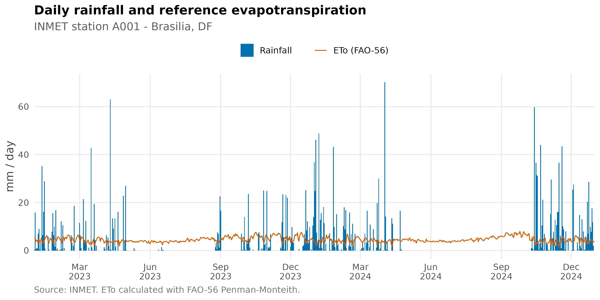
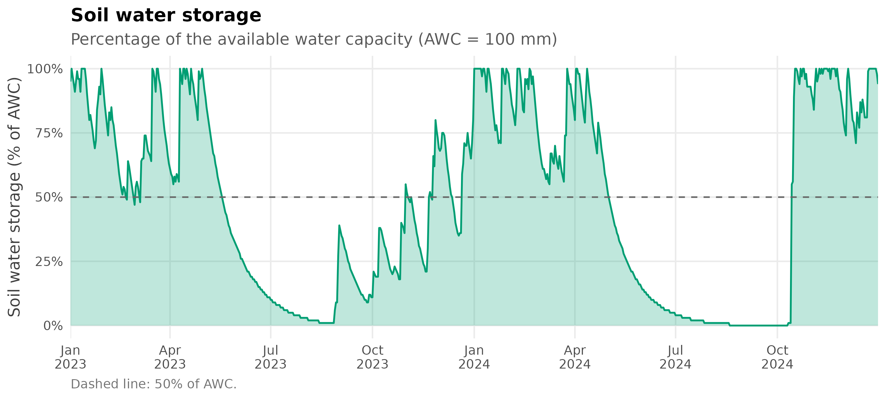
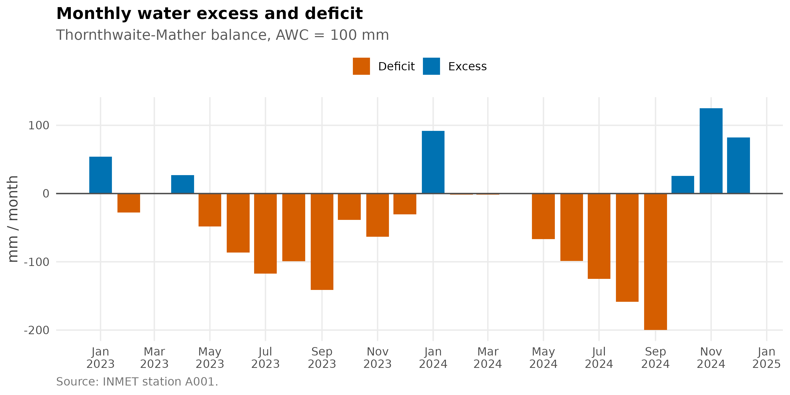
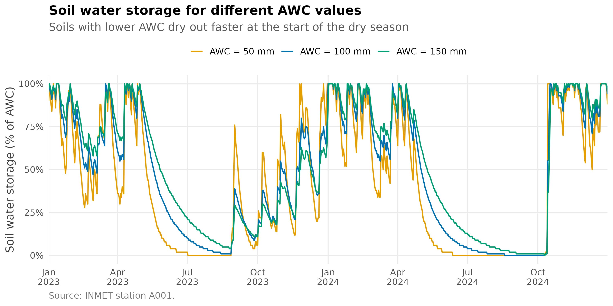

🌧️ Sequential Water Balance (Thornthwaite-Mather)
Source:vignettes/water_balance_estimation.Rmd
water_balance_estimation.Rmd🚀 Overview
This article shows how to compute a sequential soil water balance
with water_balance(), using real daily data from an INMET
automatic weather station. The workflow is:
- Load daily weather data for the station.
- Fill the short gaps left by sensor failures with
fill_gaps(). - Estimate reference evapotranspiration (ETo) with FAO-56 Penman-Monteith.
- Run the daily water balance for a given available water capacity (AWC, also known as CAD).
- Aggregate the results into a monthly balance and compare different soil AWC values.
The function follows the method of Thornthwaite & Mather (1955).
It tracks the accumulated potential water loss, the soil water storage
(arm), actual evapotranspiration (etr), water
deficit (def) and water excess (exc). The time
step is defined by the resolution of the input vectors, so the same
function works for daily, weekly or monthly balances.
⬇️ Weather data
Daily data for station A001 (Brasília, DF) between January 2023 and December 2024 can be obtained with:
df <- download_AWS_INMET_daily(
stations = "A001",
start_date = "2023-01-01",
end_date = "2024-12-31"
)To keep this article reproducible without depending on the INMET server, the data downloaded with the call above are bundled with the package and loaded here:
df <- readRDS(system.file("extdata", "A001_daily_2023_2024.rds", package = "BrazilMet"))
df$date <- as.Date(df$date)
df[1:5, c("station_code", "date", "tair_mean_c", "rainfall_mm", "sr_mj_m2")]
#> station_code date tair_mean_c rainfall_mm sr_mj_m2
#> 1 A001 2023-01-01 22.28333 0.2 23.8966
#> 2 A001 2023-01-02 22.64583 15.8 23.1633
#> 3 A001 2023-01-03 20.79167 0.6 15.6981
#> 4 A001 2023-01-04 20.74167 1.0 19.6419
#> 5 A001 2023-01-05 21.25833 0.8 17.6351🧩 Filling gaps in the weather data
Automatic stations have occasional sensor failures, and the functions that follow need complete series. Count the missing values in the variables used to compute ETo:
eto_vars <- c("tair_mean_c", "tair_min_c", "tair_max_c", "rh_max_porc",
"rh_min_porc", "ws_2_m_s", "patm_mb", "sr_mj_m2")
colSums(is.na(df[eto_vars]))
#> tair_mean_c tair_min_c tair_max_c rh_max_porc rh_min_porc ws_2_m_s
#> 29 29 29 30 30 33
#> patm_mb sr_mj_m2
#> 28 7fill_gaps() fills isolated gaps by linear interpolation.
Only gaps of up to max_gap days are filled, so long outages
are never invented, and a *_filled column flags every
filled value. Rainfall is deliberately not filled: it is intermittent,
so interpolation would create rain that did not occur (there are no
missing rainfall values in this series).
df <- fill_gaps(df, vars = eto_vars, max_gap = 3)
#> Filled values (remaining NA): tair_mean_c = 29 (0), tair_min_c = 29 (0), tair_max_c = 29 (0), rh_max_porc = 30 (0), rh_min_porc = 30 (0), ws_2_m_s = 33 (0), patm_mb = 28 (0), sr_mj_m2 = 7 (0)
colSums(is.na(df[eto_vars]))
#> tair_mean_c tair_min_c tair_max_c rh_max_porc rh_min_porc ws_2_m_s
#> 0 0 0 0 0 0
#> patm_mb sr_mj_m2
#> 0 0🧠 Reference evapotranspiration (ETo)
ETo is calculated with daily_eto_FAO56() and rounded to
0.1 mm:
df$eto <- round(daily_eto_FAO56(
lat = df$latitude_degrees,
tmin = df$tair_min_c,
tmax = df$tair_max_c,
tmean = df$tair_mean_c,
Rs = df$sr_mj_m2,
u2 = df$ws_2_m_s,
Patm = df$patm_mb,
RH_max = df$rh_max_porc,
RH_min = df$rh_min_porc,
z = df$altitude_m,
date = df$date
), 1)
anyNA(df$eto)
#> [1] FALSE📊 Rainfall and ETo
Before running the balance, it helps to look at the climatic demand (ETo) against the supply (rainfall). The wet season (October to April) and the dry season (May to September) are clearly distinct:
ggplot(df, aes(x = date)) +
geom_col(aes(y = rainfall_mm, fill = "Rainfall"), width = 1) +
geom_line(aes(y = eto, colour = "ETo (FAO-56)"), linewidth = 0.5) +
scale_fill_manual(values = c("Rainfall" = col_rain)) +
scale_colour_manual(values = c("ETo (FAO-56)" = col_eto)) +
scale_x_date(date_breaks = "3 months", date_labels = "%b\n%Y", expand = c(0, 0)) +
labs(
title = "Daily rainfall and reference evapotranspiration",
subtitle = "INMET station A001 - Brasilia, DF",
x = NULL,
y = "mm / day",
caption = "Source: INMET. ETo calculated with FAO-56 Penman-Monteith."
) +
theme_bm()
🌱 Daily water balance
Now we run the balance. AWC is the soil available water
capacity in the same units as the inputs (mm). Here we use 100 mm, a
typical value for a crop with a moderately deep root system:
bal_daily <- water_balance(
ppt = df$rainfall_mm,
etp = df$eto,
AWC = 100,
period = df$date,
time_step = "daily"
)
head(bal_daily)
#> period ppt etp time_step ppt_etp neg_ac arm alt etr def exc awc_arm
#> 1 2023-01-01 0.2 5.1 daily -4.9 -5 95 -5 5.0 0.1 0 95
#> 2 2023-01-02 15.8 5.4 daily 10.4 0 100 5 5.4 0.0 5 100
#> 3 2023-01-03 0.6 3.8 daily -3.2 -3 97 -3 3.8 0.0 0 97
#> 4 2023-01-04 1.0 4.4 daily -3.4 -6 94 -3 4.0 0.4 0 94
#> 5 2023-01-05 0.8 4.1 daily -3.3 -9 91 -3 4.0 0.1 0 91
#> 6 2023-01-06 7.0 2.7 daily 4.3 -5 95 4 2.7 0.0 0 95The columns are:
| Column | Meaning |
|---|---|
ppt_etp |
Precipitation minus ETo |
neg_ac |
Accumulated potential water loss |
arm |
Soil water storage |
alt |
Change in soil water storage |
etr |
Actual evapotranspiration |
def |
Water deficit (etp - etr) |
exc |
Water excess (drainage or runoff) |
awc_arm |
Percentage of the AWC stored in the soil |
Soil water storage
The storage as a percentage of the AWC shows when the soil is full, when it dries out and how fast it is replenished:
ggplot(bal_daily, aes(x = period, y = awc_arm)) +
geom_area(fill = col_storage, alpha = 0.25) +
geom_line(colour = col_storage, linewidth = 0.7) +
geom_hline(yintercept = 50, linetype = "dashed", colour = "grey40") +
scale_x_date(date_breaks = "3 months", date_labels = "%b\n%Y", expand = c(0, 0)) +
scale_y_continuous(limits = c(0, 100), labels = function(x) paste0(x, "%")) +
labs(
title = "Soil water storage",
subtitle = "Percentage of the available water capacity (AWC = 100 mm)",
x = NULL,
y = "Soil water storage (% of AWC)",
caption = "Dashed line: 50% of AWC."
) +
theme_bm()
📅 Monthly water balance
The same function can be applied to any time step. Below, daily
rainfall and ETo are summed by month and the balance is recalculated
with time_step = "monthly":
df$month <- as.Date(format(df$date, "%Y-%m-01"))
monthly <- aggregate(cbind(rainfall_mm, eto) ~ month, data = df, FUN = sum)
bal_monthly <- water_balance(
ppt = monthly$rainfall_mm,
etp = monthly$eto,
AWC = 100,
period = monthly$month,
time_step = "monthly"
)
head(round(bal_monthly[, c("ppt", "etp", "arm", "etr", "def", "exc")], 1), 6)
#> ppt etp arm etr def exc
#> 1 190.8 136.5 100 136.5 0.0 54
#> 2 55.0 140.7 42 113.0 27.7 0
#> 3 135.2 129.2 48 129.2 0.0 0
#> 4 187.6 108.8 100 108.8 0.0 27
#> 5 1.4 118.4 31 70.0 48.4 0
#> 6 2.2 108.4 11 22.0 86.4 0The classic extended water balance chart displays the monthly water excess (above zero) and water deficit (below zero):
ggplot(bal_monthly, aes(x = period)) +
geom_col(aes(y = exc, fill = "Excess"), width = 25) +
geom_col(aes(y = -def, fill = "Deficit"), width = 25) +
geom_hline(yintercept = 0, colour = "grey30") +
scale_fill_manual(values = c("Excess" = col_excess, "Deficit" = col_deficit)) +
scale_x_date(date_breaks = "2 months", date_labels = "%b\n%Y") +
labs(
title = "Monthly water excess and deficit",
subtitle = "Thornthwaite-Mather balance, AWC = 100 mm",
x = NULL,
y = "mm / month",
caption = "Source: INMET station A001."
) +
theme_bm()
Annual summary
bal_monthly$year <- format(bal_monthly$period, "%Y")
annual <- aggregate(cbind(ppt, etp, etr, def, exc) ~ year, data = bal_monthly, FUN = sum)
names(annual) <- c("Year", "Rainfall", "ETo", "ETR", "Deficit", "Excess")
knitr::kable(annual, digits = 0, caption = "Annual water balance components (mm)")| Year | Rainfall | ETo | ETR | Deficit | Excess |
|---|---|---|---|---|---|
| 2023 | 996 | 1667 | 1014 | 653 | 81 |
| 2024 | 1399 | 1625 | 973 | 652 | 325 |
🔬 Effect of the soil AWC
The AWC controls how much water the soil can store, and it is the main parameter to adapt the balance to a given crop or soil. Here the daily balance is run for three AWC values:
awc_values <- c(50, 100, 150)
bal_awc <- do.call(rbind, lapply(awc_values, function(awc) {
b <- water_balance(
ppt = df$rainfall_mm,
etp = df$eto,
AWC = awc,
period = df$date,
time_step = "daily"
)
b$AWC <- factor(paste("AWC =", awc, "mm"), levels = paste("AWC =", awc_values, "mm"))
b
}))
ggplot(bal_awc, aes(x = period, y = awc_arm, colour = AWC)) +
geom_line(linewidth = 0.7) +
scale_colour_manual(values = c("#E69F00", "#0072B2", "#009E73")) +
scale_x_date(date_breaks = "3 months", date_labels = "%b\n%Y", expand = c(0, 0)) +
scale_y_continuous(limits = c(0, 100), labels = function(x) paste0(x, "%")) +
labs(
title = "Soil water storage for different AWC values",
subtitle = "Soils with lower AWC dry out faster at the start of the dry season",
x = NULL,
y = "Soil water storage (% of AWC)",
caption = "Source: INMET station A001."
) +
theme_bm()
total_deficit <- aggregate(def ~ AWC, data = bal_awc, FUN = sum)
names(total_deficit) <- c("Soil", "Total deficit (mm)")
knitr::kable(total_deficit, caption = "Total water deficit in the period, by AWC")| Soil | Total deficit (mm) |
|---|---|
| AWC = 50 mm | 1796.6 |
| AWC = 100 mm | 1634.4 |
| AWC = 150 mm | 1528.2 |
✅ Summary
water_balance() turns precipitation and ETo into
storage, actual evapotranspiration, deficit and excess for any time step
and any AWC. Combined with daily_eto_FAO56() and the INMET
data from download_AWS_INMET_daily(), it provides a
reproducible workflow for irrigation management and agroclimatic
analysis.
📚 Reference
Thornthwaite, C. W., & Mather, J. R. (1955). The water balance. Publications in Climatology, 8(1), 1-104.